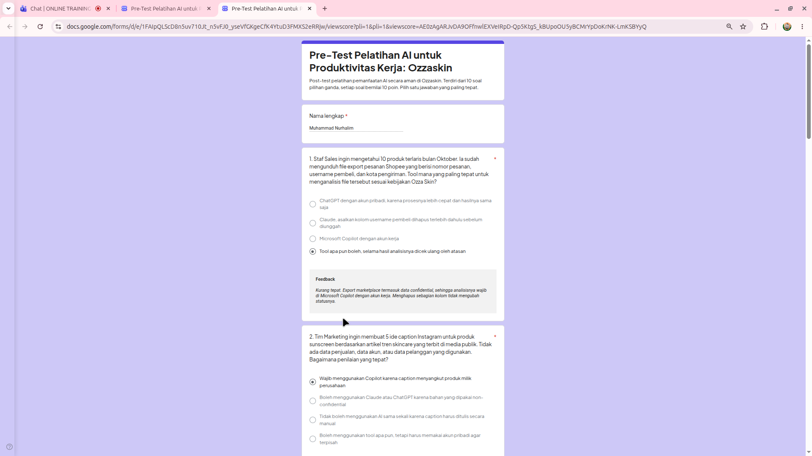

MAHASISWA TEKNIK INFORMATIKA
Seseorang yang tertarik dengan teknologi, pengembangan web, dan dunia komputer. Saat ini gua terus belajar, mencoba hal baru, dan membangun proyek kecil untuk mengasah kemampuan.
Kenalan lebih jauh Hubungi gua
Curious mind. Continuous learner.
01 / ABOUT ME
Gua adalah mahasiswa Teknik Informatika yang punya rasa ingin tahu besar terhadap cara kerja teknologi. Ketertarikan gua ada di pengembangan web, sistem operasi Linux, jaringan komputer, dan eksplorasi homelab.
Buat gua, belajar bukan cuma memahami teori, tapi juga berani mencoba dan membangun sesuatu. Saat ini gua sedang memperkuat dasar pemrograman dan mengembangkan proyek sebagai tempat latihan.
02 / SKILLS
Indikator berikut adalah gambaran kemampuan pribadi, bukan hasil sertifikasi formal.
Struktur dan tampilan halaman web.
Logika dan interaksi halaman web.
Version control dan publikasi proyek.
Sistem operasi Linux dan jaringan komputer.
03 / LANGUAGE
Bahasa utama
Sesuaikan dengan kemampuan aktual
04 / INTERESTS
Mengeksplorasi komputer, software, dan teknologi baru.
Mencoba server mandiri, Linux, Docker, dan jaringan lokal.
Mengembangkan ide dan menuangkannya menjadi cerita.
Menikmati game, cerita, dan desain di dalamnya.